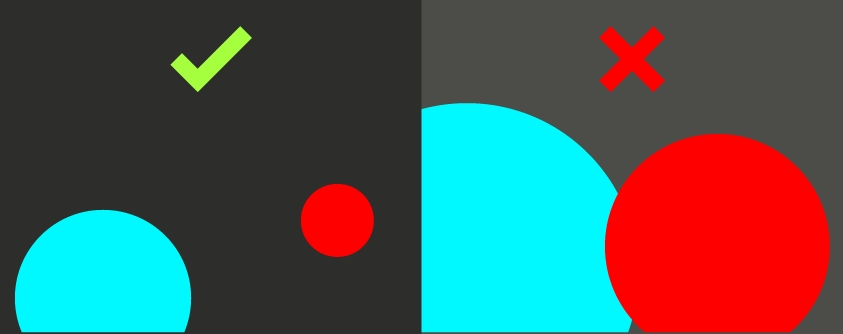

O Espaço Vazio é o espaço de fundo dentro de uma arte e é de extrema importância, pode ser espaço não utilizado ou espaço negativo. A diferença entre espaço não utilizado e espaço negativo é que o espaço negativo se combina à arte para criar uma segunda forma ou transmitir um conceito. Diz-se que uma arte deve ter pelo menos 50% de espaço vazio.
